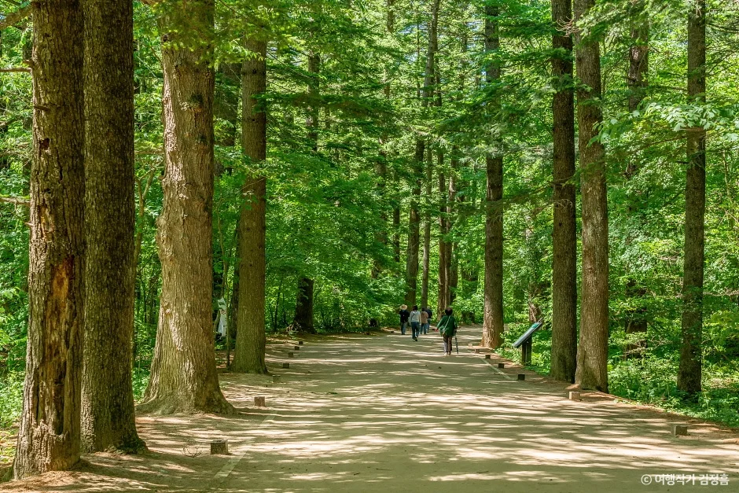
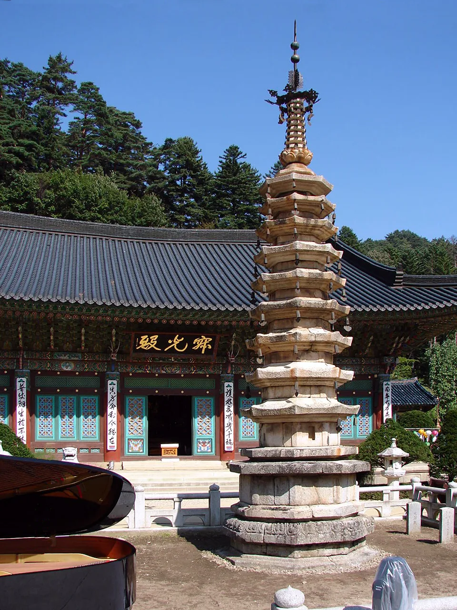
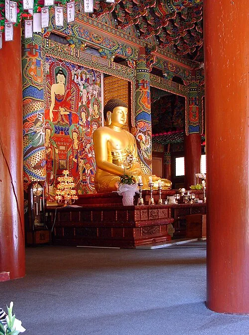
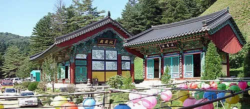
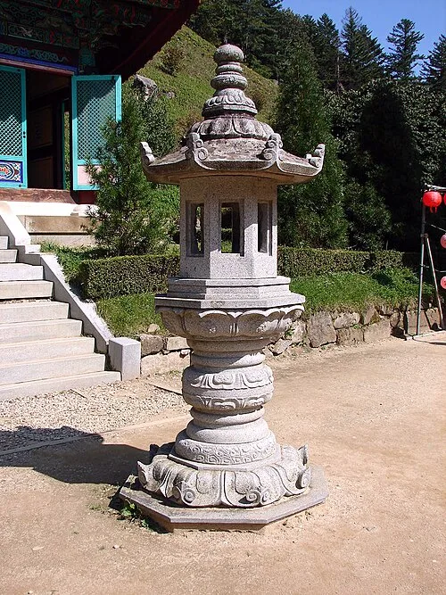

▲ 월정사 전나무숲길. 일주문에서 금강교까지 약 1km 구간이 핵심이다 ⓒ 여행작가 김광흠
'월정사 전나무숲길'을 검색하면 두 가지 전혀 다른 정보가 섞여 나온다. 하나는 일주문에서 금강교까지 약 1km, 순환형으로 돌아도 1.9km 남짓한 짧은 산책로다. 다른 하나는 월정사에서 상원사까지 이어지는 '선재길'로, 왕복 20km에 가까운 완전히 다른 코스다. 자차로 가서 가볍게 걷고 싶은 사람이 이 둘을 헷갈리면 계획이 완전히 어긋난다.
1. 이름은 비슷해도 완전히 다른 두 길

▲ 월정사 팔각구층석탑. 전나무숲길 끝에서 만나는 월정사의 대표 유물이다 ⓒ Wikimedia Commons (CC BY-SA 3.0)
전나무숲길의 핵심 구간은 일주문에서 금강교까지 약 1km다. 폭이 넓고 급격한 오르막이 없어 남녀노소 누구나 부담 없이 걸을 수 있는 흙길이다. 숲과 계곡을 한 바퀴 도는 순환 코스까지 포함해도 1.9km, 1시간이면 충분하다.
반면 선재길은 완전히 다른 규모다. 신라 승려 자장율사가 걸었다는 이 옛길은 월정사에서 상원사까지 계곡을 따라 이어지며, 왕복 20km에 가까운 장거리 트레킹 코스다. 가벼운 산책을 기대하고 왔다가 이 정보를 보고 당황하는 경우가 많다.

▲ 월정사 법당 내부. 전나무숲길을 걸어 들어오면 만나는 사찰 중심 공간이다 ⓒ Wikimedia Commons (CC BY-SA 3.0)
2. 주차장 세 곳 — 요금은 동일, 위치는 다르다
| 주차장 | 승용차 요금 | 경차·전기차 | 대형·버스 |
|---|---|---|---|
| 월정사 | 6,000원 | 3,000원 | 9,000원 |
| 상원사 | 6,000원 | 3,000원 | 9,000원 |
| 진고개 | 6,000원 | 3,000원 | 9,000원 |
세 주차장 모두 요금 체계는 동일하다. 짧은 전나무숲길만 걷고 돌아올 계획이라면 월정사 주차장이 목적지가 된다. 상원사까지 자차로 이동하고 싶다면, 월정사에서 상원사로 이어지는 비포장 도로를 이용할 수 있는데 15~20분 정도 걸린다. 다만 성수기에는 이 길도 혼잡해질 수 있어, 진부시외버스터미널에서 226·227번 버스로 두 사찰을 모두 지나가는 대중교통 경로도 대안이 된다.
▲ 월정사 일주문. 전나무숲길 핵심 구간이 이 문에서 금강교까지 이어진다 ⓒ Wikimedia Commons (CC BY-SA 3.0)
3. 추천 동선 — 걷고 버스로 돌아오기
▲ 오대산국립공원 입구. 월정사와 상원사 모두 이 국립공원 구역 안에 있다 ⓒ 국립공원 블로그 기자단
선재길까지 걸어보고 싶다면 흔히 추천되는 방법이 있다. 월정사 주차장에 차를 세우고 버스로 상원사까지 이동한 뒤, 선재길을 따라 월정사까지 걸어 내려오는 방식이다. 반대로 월정사에서 상원사까지 걸어 올라간 뒤 상원사 앞 정류장에서 버스로 돌아오는 방법도 있다. 어느 쪽이든 편도만 걷고 편도는 대중교통을 이용하는 것이 체력 부담을 줄이는 핵심이다.
참고 짧은 전나무숲길만 원한다면 굳이 상원사까지 갈 필요가 없다. 월정사 주차장에 세우고 일주문부터 금강교까지 왕복하는 것만으로 충분하다.

▲ 월정사 법당 건물군. 여러 전각이 나란히 이어져 있어 산책 겸 둘러보기 좋다 ⓒ Wikimedia Commons (CC BY-SA 3.0)

▲ 강원도 산악 단풍 풍경(참고 이미지). 오대산 역시 같은 시기 단풍이 절정을 이룬다 ⓒ CarPrism
4. 정리

▲ 월정사 경내 석등. 짧은 전나무숲길만 걷고 돌아오는 코스에서도 함께 둘러볼 수 있다 ⓒ Wikimedia Commons (CC BY-SA 3.0)
체크포인트
- 짧은 산책이 목적이면 전나무숲길(약 1km, 순환 1.9km)만으로 충분하다.
- 선재길(왕복 20km)은 완전히 다른 장거리 코스이니 검색할 때 헷갈리지 말아야 한다.
- 주차장은 월정사·상원사·진고개 세 곳, 요금은 모두 6,000원으로 동일하다.
- 선재길을 걷고 싶다면 편도는 걷고 편도는 버스로 돌아오는 동선이 체력 부담을 줄인다.